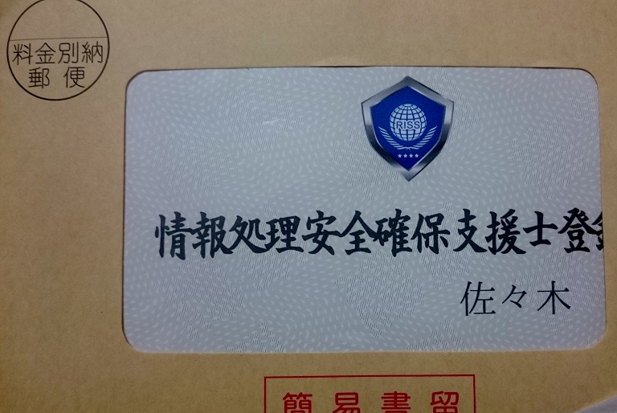

こんにちは。
コンちゃんこと佐々木です。

情報処理安全確保支援士（登録セキスペ）になりました。
弁護士などと同じように、試験合格後に登録しないと名乗れないタイプの資格です。
元々、前身の情報セキュリティスペシャリスト試験に受かっていたわけですが、前身試験からのアップグレード期間が迫っていたので、登録申請を出しました。
セキュスペ取るの結構苦労したので、このまま失いたくはなかったのです。
ところで登録セキスペですが、維持費が高いです（他の士業もそうかもですが）。
登録申請に2万かかるのはまぁ許容するとして、毎年のオンライン講習2万、3年に一度の集合講習が10万、これは高いですね...。
どこからも補助を得ていないので厳しいなぁ。
セキュリティ業とか大企業くらいじゃないと補助なさそう。
頑張って維持していきまっしょい！